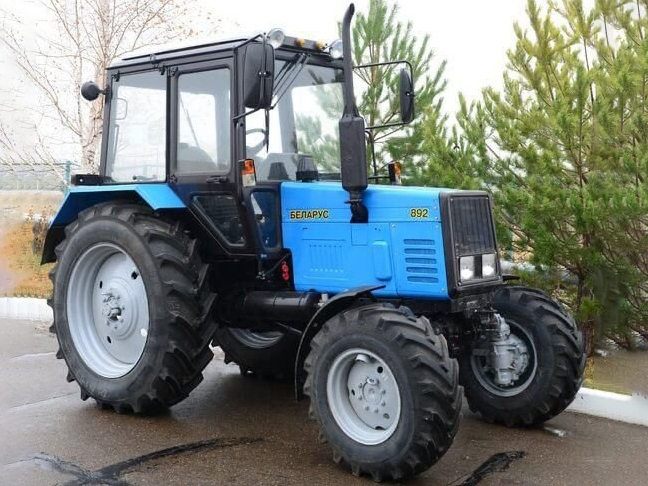

МТЗ Беларус 892

МТЗ Беларус 892 – це посилена модифікація класичної 82-ї серії, розроблена для тих, кому потрібна вища продуктивність за збереження компактних габаритів. Головна особливість моделі – 4-циліндровий двигун Д-245.5, оснащений турбонаддувом. Це забезпечує значний приріст крутного моменту, що дозволяє трактору ефективніше працювати з важчими агрегатами та легше долати складні ділянки поля.
Трактор має повний привід та зазвичай комплектується коробкою передач із мультиплікатором (прискорювачем), що збільшує кількість швидкостей до 18 вперед та 4 назад. Завдяки збільшеним колесам та посиленій трансмісії, Беларус 892 демонструє кращі тягові характеристики, ніж базова 82-га модель, залишаючись при цьому таким же простим у ремонті та обслуговуванні. Це ідеальна «робоча конячка» для господарств, де необхідно поєднувати транспортні операції на підвищених швидкостях із важкими польовими роботами.
| Параметр | Значення |
|---|---|
| Клас тяги | 1.4 |
| Тип ходової частини | колісний |
| Колісна формула | 4х4 (повний привід) |
| Тип рами | напіврамна конструкція |
| Основне призначення | виконання широкого спектра сільськогосподарських робіт з причіпними, навісними та напівнавісними машинами |
| Параметр | Значення |
|---|---|
| Модель | Д-245.5 |
| Тип двигуна | 4-циліндровий з турбонаддувом |
| Спосіб охолодження | рідинне |
| Розташування циліндрів | рядне, вертикальне |
| Робочий об’єм | 4,75 л |
| Номінальна потужність | 65 кВт (89 к.с.) |
| Номінальні оберти | 1800 об/хв |
| Максимальний крутний момент | 396 Н·м (при 1400 об/хв) |
| Питома витрата палива | 226 г/кВт·год |
| Параметр | Значення |
|---|---|
| Муфта зчеплення | суха, однодискова, постійно замкнута |
| Тип КПП | механічна, ступенчаста (з мультиплікатором) |
| Кількість передач | 18 вперед / 4 назад |
| Тип реверсу | механічний |
| Діапазон швидкостей (вперед) | 2,1 – 36,6 км/год |
| Вал відбору потужності | незалежний двошвидкісний (540 / 1000 об/хв) |
| Діапазон | Передача | Теоретична швидкість, км/год | Передаточне число (загальне) | Тягове зусилля, кН |
|---|---|---|---|---|
| Знижені передачі | 1 | 2,10 | 225,4 | 16,80* |
| Знижені передачі | 2 | 3,50 | 135,2 | 16,80* |
| Знижені передачі | 3 | 5,80 | 81,6 | 16,80* |
| Знижені передачі | 4 | 7,30 | 64,8 | 15,90 |
| Знижені передачі | 5 | 8,40 | 56,3 | 13,80 |
| Знижені передачі | 6 | 9,90 | 47,8 | 11,70 |
| Знижені передачі | 7 | 12,40 | 38,2 | 9,30 |
| Знижені передачі | 8 | 14,30 | 33,1 | 8,10 |
| Знижені передачі | 9 | 28,10 | 16,8 | 4,10 |
| Підвищені передачі | 1 | 2,60 | 182,1 | 16,80* |
| Підвищені передачі | 2 | 4,30 | 110,1 | 16,80* |
| Підвищені передачі | 3 | 7,35 | 64,4 | 15,80 |
| Підвищені передачі | 4 | 9,10 | 52,0 | 12,80 |
| Підвищені передачі | 5 | 10,60 | 44,7 | 10,90 |
| Підвищені передачі | 6 | 12,50 | 37,9 | 9,30 |
| Підвищені передачі | 7 | 15,60 | 30,3 | 7,40 |
| Підвищені передачі | 8 | 18,10 | 26,1 | 6,40 |
| Підвищені передачі | 9 | 36,60 | 12,9 | 3,15 |
| Параметр | Значення |
|---|---|
| Тип коліс | пневматичні шини низького тиску |
| Колісна формула | 4х4 (повний привід) |
| Типорозмір передніх шин | 13.6 - 20 (збільшений профіль) |
| Типорозмір задніх шин | 16.9 R38 (широкий профіль) |
| Радіус ведучого колеса (заднього) | ~0,82 м |
| Тип переднього моста | ведучий, портальний (з конічними редукторами) |
| Тип підвіски | передня — розсувна пружинна; задня — жорстка |
| Регулювання колії (передня) | 1450 – 1970 мм |
| Регулювання колії (задня) | 1500 – 2100 мм |
| Дорожній просвіт (кліренс) | 465 мм |
| Агротехнічний просвіт | 645 мм |
| Гальмівна система | дискова, суха; привід гальм причепа — пневматичний |
| Блокування диференціалу | гідравлічне з автоматичним та примусовим режимами |
| Параметр | Значення |
|---|---|
| Під час роботи з навантаженням | 14,0 – 16,5 кг/год |
| Під час холостих переїздів | 6,0 – 7,8 кг/год |
| Під час зупинок (холостий хід) | 1,0 – 1,2 кг/год |
| Параметр | Значення |
|---|---|
| Експлуатаційна маса | 4150 кг |
| Максимальна допустима вага | 7000 кг |
| Довжина / Ширина / Висота | 3970 / 1970 / 2850 мм |
| Колісна база | 2450 мм |
| Об’єм паливного баку | 130 л |
| Параметр | Значення |
|---|---|
| Гідравлічна система | роздільно-агрегатна, 45 л/хв |
| Вантажопідйомність навіски | 3200 кг |
| Особливості | завдяки турбіні двигун має вищий ККД на низьких обертах порівняно з Д-243 |